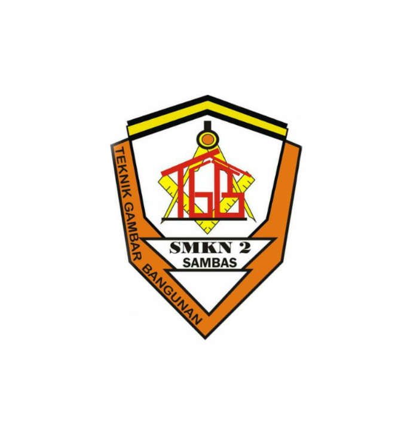

Website Ini Di Buat Oleh YUDHA

JURUSAN TEKNIK GAMBAR BANGUNAN
TEKNIK GAMBAR BANGUNAN, jurusan ini mengajarkan kita bagaimana cara menggambar teknik dasar manual dan perangkat lunak seperti AUTOCad. terkadang masyarakat mengnganggap jurusan ini sebagai "TUKANG / KULI" tapi kenyataannya tidak benar.
Website Ini Di Buat Oleh YUDHA

AKOMONDASI PERHOTELAN
JURUSAN AKOMDASI PERHOTELAN, adalah jurusan dimana kita akan diajarkan teknik-teknik atau tata cara pelayanan pengunjung yang berada di hotel atau melayani parawisatawan.